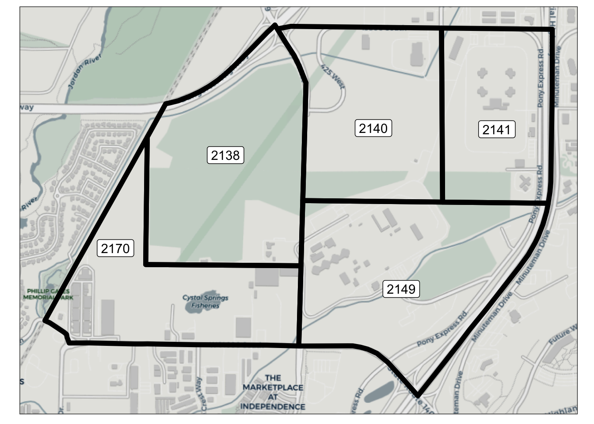
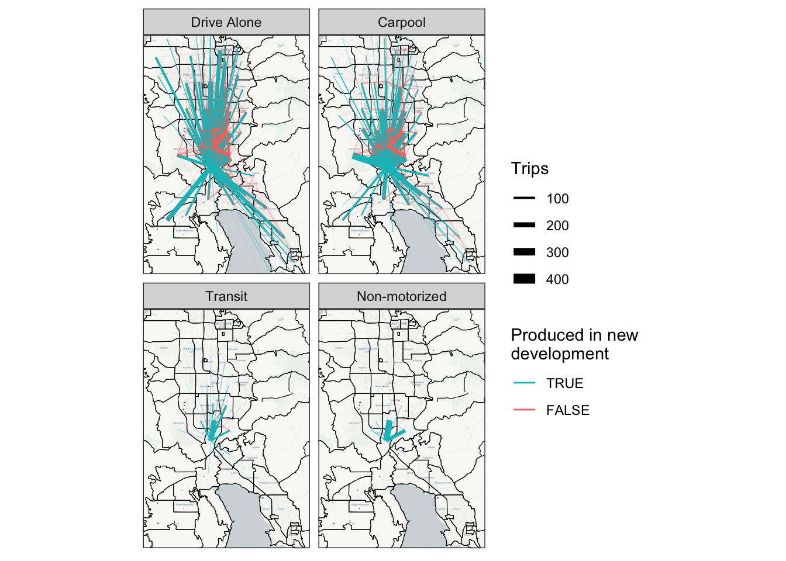

3 Scenario 1: Change in Land Use
Near Draper, Utah there is a defunct prison site that is slated for redevelopment. The 600-acre site will be developed into a multi-use residential and commercial area, with an emphasis on walkability and transit. This development is known as The Point, and is the basis for the first model scenario in this paper. Figure 3.1 shows the location of this development relative to the surrounding area.
This scenario models the change in land use that a development such as The Point would create. Though the actual development plans for The Point include an expansion of transit services, only the additional households and jobs created from this development are modeled in this scenario. The data for the land use changes comes from the WFRC land use forecast, which is in turn based on projections from the Point of the Mountain State Land Authority (state_land_authority_framework_2021?). The development is expected to be fully completed by 2050, and so the 2050 WFRC land use and socioeconomic data projections are used for this site.
The site consists of 5 TAZs, as shown in Figure 3.2. Table 3.1 shows the households, population, and employment by type of these TAZs in both the baseline scenario and with the new land use. Notably, there were no households and relatively few jobs in these TAZs in the baseline scenario. No changes other than to the land use/socioeconomic data in these 5 TAZs was made relative to the baseline scenario.

TAZ | TOTHH | HHPOP | RETEMP | INDEMP | OTHEMP | TOTEMP |
|---|---|---|---|---|---|---|
2,138 | 0 | 0 | 0 | 0 | 0 | 0 |
2,140 | 0 | 0 | 0 | 0 | 0 | 0 |
2,141 | 0 | 0 | 0 | 0 | 277 | 277 |
2,149 | 0 | 0 | 0 | 0 | 796 | 796 |
2,170 | 0 | 0 | 3 | 359 | 71 | 433 |
TAZ | TOTHH | HHPOP | RETEMP | INDEMP | OTHEMP | TOTEMP |
|---|---|---|---|---|---|---|
2,138 | 7,431 | 17,811 | 4 | 0 | 76 | 80 |
2,140 | 0 | 0 | 610 | 4 | 7,390 | 8,004 |
2,141 | 0 | 0 | 1,449 | 0 | 5,363 | 6,812 |
2,149 | 0 | 0 | 962 | 2 | 7,372 | 8,336 |
2,170 | 0 | 0 | 7 | 357 | 106 | 471 |
3.1 Scenario Creation
In the WFRC model, this change is trivial to implement. The model uses the land use/socioeconomic data directly, so the only adjustment needed is replacing the data for the specific TAZs with the 2050 data. As noted previously, all other TAZs have the same land use data as in the 2019 baseline scenario.
ActivitySim requires two changes for this scenario. The first is an update to the TAZ-level land use and socioeconomic data, which is identical to the process for the WFRC model. The second is an updated synthetic population.
In order to keep consistency between model scenarios, a new population was created only for the 5 affected TAZs and joined to the existing synthetic population. There were no individuals or households in the affected zones in the existing synthetic population, so no individuals or households needed to be removed before joining the two populations.
Creating the new synthetic population followed a similar process as in the baseline scenario (?sec-populationsim), but used the new land use data as new TAZ-level controls. However, many of the controls for PopulationSim use tract-level data from the Census, and existing Census data for these controls is unrepresentative of the new development, due to the lack of households and economic activity at the site of the development. Because of this, the Census tract covering the Gateway area in Salt Lake City (see Figure 3.3) is used to represent the new development patterns at The Point. The income distribution, etc. of this area will therefore match that of the Gateway area, though the TAZ-level controls and land use/socioeconomic data in the area will match the WFRC projections for 2050.
In a more realistic case, a transportation agency would have forecasted land use and socioeconomic data that could be used as controls to PopulationSim, rather than using a (different) representative Census tract for new development. However, our ActivitySim implementation only needs to be within a rough approximation of the WFRC model for the purposes of this project, and the method used here results in reasonable accuracy between the models.
Additionally, our ActivitySim implementation is designed to be independent from the WFRC model where feasible.
3.2 Scenario Analysis
There are several kinds of analyses an agency likely would want to do in assessing the effects of a change in land use. Chief among them would be an analysis of the new trips resulting from the development. This could include analysis in the number of trips, the distance traveled, and where the trips are being made.
Both model types allow for very easy analysis of trip numbers and lengths, as the WFRC model outputs origin-destination trip tables directly by mode and purpose, and ActivitySim outputs a list of trips containing information on origin, destination, and mode. Figure 3.4, ?fig-lu-personmiles-abm, for example, show the new trip-miles produced in the updated zones for the WFRC mode and ActivitySim, respectively. However, there is a crucial difference between the model types, and that is the treatment of trips that do not begin or end at the home.
In the WFRC model (and in many trip-based models), homes produce trips with different trip purposes, including home-based work, home-based other, and non–home-based trips. “Home-based” trips have an origin or destination at the home, and are fairly straightforward to model, as the destination choice step can take for granted that these trips have one trip end in the zone that produced them. In addition to home-based trips, though, individuals make many “non–home-based” trips, which do not have an origin or destination at the home (e.g. traveling from work to a grocery store). Non–home-based trips can be a significant portion of total travel, as Figure 3.4 shows, but are not as straightforward to model as home-based trips.
By contrast, an ABM models individuals and their travel explicitly, and this makes the treatment of non–home-based trips much more straightforward. Each trip is tied to a specific individual with a defined home location, and so no extra “redistribution” step is needed to analyze non–home-based trips: these are “built-in” to each individual’s tour pattern. In fact, as Figure 3.5 shows, non–home-based trips can occur as part of any tour type/purpose; there is no separate “non–home-based” purpose in ActivitySim. Note that Figure 3.5 counts person-miles by tour purpose, using the purposes as defined in ActivitySim, rather than converting the ActivitySim trips to the “common” trip purposes as discussed in ?sec-baseline-calibration.
In addition to looking at total person-miles traveled, it is also useful to analyze the origins and destinations of the new trips. One common way to visualize trip origins and destinations is with desire lines, which show lines for each trip origin/destination pair. The thickness of the line represents the number of trips between the pair of zones.
Figure 3.6 shows a desire line plot by mode for all home-based trips produced in the new development zones. This figure is in line with what is expected: non-motorized trips are quite short, transit trips are exclusively to downtown areas, and many auto trips are made with varying lengths. Figure 3.6 also shows a similar mode split to Figure 3.4. Although the former depicts the number of trips and the latter depicts trip distance, there is a rough correlation between trip count and miles traveled, so it is not surprising that the mode split is similar between the figures.

There is difficulty in analyzing the non–home-based trips, however. Because non–home-based trips by definition have neither an origin or destination at the home (where trips are produced in the trip generation step), these trips happen exclusively between zones that did not produce them. It is difficult therefore to know how best to redistribute non–home-based trips, as they could in reality have any number of origins and/or destinations. Though modeling the destination choice for non–home-based trips could be done via a similar process to that of home-based trips, the origins of these trips need to be modeled as well.
There are several methods to redistribute non–home-based trips in trip-based models. One approach is to assign non–home-based trip origins in a similar manner to trip destinations as part of the trip distribution step, either with a gravity model or some other distance-decay function. The destinations of these non–home-based trips can then be assigned as if they were any other trip. This results in non–home-based trips that are more likely to have both an origin and destination relatively near to the home.
The WFRC model takes a different approach. Here there are two sources of information for non–home-based trip ends: a production model and an attraction model. In the trip generation step, households produce non–home-based trips similarly to any other trip purpose. However, the trips produced in this step determine only the quantity of non–home-based trips, not the trip ends. The distribution of non–home-based trips is determined by a trip attraction model (largely based on TAZ employment). This distribution is then globally scaled to match the total quantity of non–home-based trips produced in the trip generation step.
Typically in a trip-based model, once non–home-based trips are assigned trip ends, they have no connection to the homes/zones that produced them, and are treated as “belonging” to either the origin or destination zone. Because of this, it is not possible to simply filter trips by origin or destination as can be done with the home-based trips. Instead, we took the difference between the entire non–home-based trip matrices in both this scenario and the baseline scenario.
Figure 3.7 shows the desire line plot for the difference in non–home-based trips between this scenario and the baseline scenario. Two things are immediately noticeable from this plot.
The first is that many pairs of zones saw a decrease in non–home-based trips between them compared to the baseline scenario (i.e. there were more non–home-based trips in the baseline scenario between these zones). Certainly it makes little sense to predict fewer trips as the result of added population and employment. However, this is in fact not an overall decrease in non–home-based trips; these trips are simply being assigned trip ends in different locations due to the nearby change in land use.
The second is that all pairs of zones that saw an increase in non–home-based trips include an origin or destination in the new development, i.e. the home zones of the new population. Because the change in employment was much more significant than the change in population (see Table 3.1), many more non–home-based trip ends were attracted to the development zones compared to the relatively little global increase in non–home-based trips due to the population. Both effects (the global increase in and the changed distribution of non–home-based trips) are present in the model, but the effects are impossible to separate.

As mentioned, an ABM allows for tracking of individuals explicitly, and so analyzing non–home-based trips is much more straightforward. ?fig-lu-desire-abm shows desire lines of all trips made by individuals living in the new development zones. Non–home-based trips are colored differently from home-based trips.
It is easy to connect non–home-based trips to their place of production, as each trip is linked to a specific individual (who has a defined home location). It is also easy to see how trips are related to each other, as each individual has a specific sequence of trips. The individual nature of an ABM avoids entirely the problems trip-based models have with non–home-based trips. In a complicated land use forecast, each development’s full contribution to network congestion can be analyzed individually.
